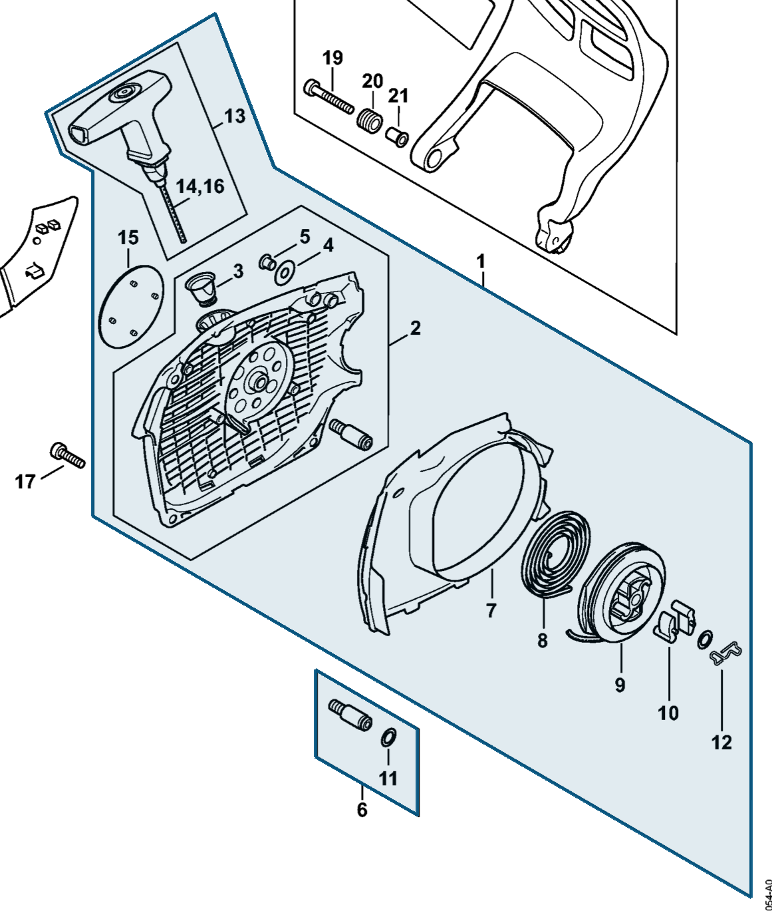

Fan housing with rewind starter
1142 080 2102
MS 462 — rewind starter
Includes items 2–15, including spring 1128 195 3500 (item 12). Mounts to the crankcase with three pan head screws 9022 371 1020 (IS M5×20; item 17).
Item 1 Qty listed: 1

MS 462 C-M Z spare-parts list, 10/29/2024. Drawing p. 21; parts table p. 22.